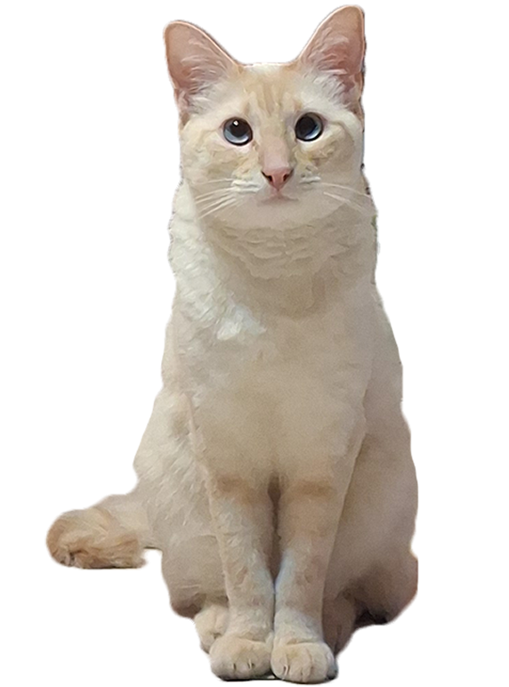

Belleza en Tonos Cálidos
- Sus ojos
- Su Máscara
- Su Pelaje
Dos zafiros líquidos que hipnotizan a cualquiera que se atreva a mirarlos fijamente.
Ese tono tostado en su cara le da un aire de princesa egipcia, pero con un toque de traviesa.
Tan suave como el algodón de azúcar, digno de ser acariciado (solo cuando ella lo permite, claro).
